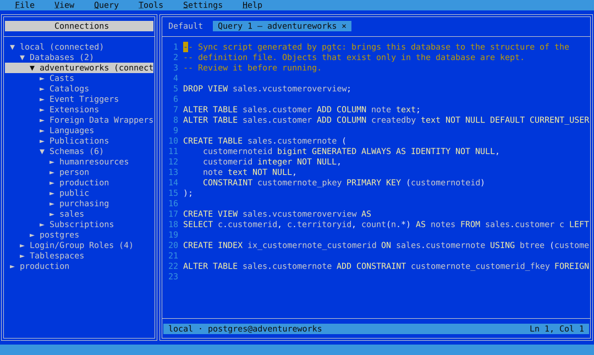

Database definition: export and load
A .pgdef file is a structured, deterministic export of a database's schema
definition — its DDL-level objects, no data. Loading the file against a database diffs it with that database's
catalogs and generates the DDL script that brings the database to the definition in the file.
What it is good for
- Schema migration. Export the definition of the development database; load it against test or production; review and execute the script. It contains only the differences.
- Cloning a schema. Load a definition into an empty database: the script creates every object.
- Version control. The file is text with a stable order, so two exports of the same definition are identical and a change shows as a clean diff.
- Schema diff. Load an older file against the current database — or compare two files with any diff tool.
The scope is the schema definition: tables, columns, constraints, indexes, views,
functions, … No rows are exported or copied. For data, use pg_dump, or
export a result.
Exporting a definition
- In the object tree, put the cursor on the database (the database row itself).
- Choose — or F2 on the database and .
- Choose the folder and type a file name ending in
.pgdef, for exampleadventureworks.pgdef, then Enter. An existing file is overwritten only after a question.

.pgdef files are highlighted.pgtc reads the catalogs through a session of its own (Reading the schema of adventureworks…), writes the file in the background and then reports Definition of adventureworks exported to … in the status line. The UI is not blocked meanwhile.
All catalog queries of an export run in one READ ONLY, REPEATABLE READ transaction, so
the file describes a single snapshot even while other sessions execute DDL. They run with an empty
search_path, so every name the server deparses into the file is schema-qualified.
The export always covers the whole database: all schemas except the system schemas
(pg_catalog, information_schema, pg_toast, temporary schemas) and schemas
created by an extension. There are no options.
The menu item is available only while a database row is selected.
The .pgdef file
A .pgdef file is pretty-printed JSON. The start of a small
one:
{
"format": 1,
"schemas": [
{
"name": "sales",
"tables": [
{
"name": "customer",
"columns": [
{
"name": "customerid",
"type": "integer",
"not_null": true
},
{
"name": "personid",
"type": "integer"
},
{
"name": "createdby",
"type": "text",
"not_null": true,
"default": "CURRENT_USER"
}
],
"constraints": [
{
"name": "PK_Customer_CustomerID",
"kind": "primary_key",
"definition": "PRIMARY KEY (customerid)"
}
]
}
]
}
]
}- Deterministic. Schemas, tables, functions and so on are sorted by name; columns keep their
attnumorder. The same definition always produces the same file, byte for byte. - Definition only. The file has no timestamp, no server version, no OIDs, no owners and no privileges. Two exports differ only if the definition differs.
- Server-deparsed expressions. Constraint, index, view and function definitions, defaults and partition
bounds are stored as the server prints them (
pg_get_constraintdef(),pg_get_indexdef(),pg_get_viewdef(),pg_get_functiondef(),pg_get_expr()), and are compared as text. - Self-contained. The file refers to nothing outside itself.
"format": 1is the version of the file layout. A file with a higher number, written by a newer pgtc, is refused with This definition file was written by a newer pgtc (format N).
For syntax highlighting of .pgdef files in an editor, associate the extension
.pgdef with JSON.
What is in the file — and what is not
| Included | Details |
|---|---|
| Extensions | Name and schema. Member objects of an extension (pg_depend.deptype = 'e') are not listed — CREATE EXTENSION creates them. |
| Schemas | With their comments. |
| Types | Enum, composite, domain, range. |
| Sequences | Data type, START, INCREMENT, MINVALUE / MAXVALUE, CACHE, CYCLE, OWNED BY. |
| Tables | Columns (type, NOT NULL, default, identity, generated); constraints (primary key, unique, foreign key, check, exclusion); indexes that do not back a constraint; triggers; rules; row-level security policies; partition key and partitions with their bounds; storage parameters; comments. |
| Views, materialized views | Their query, options, and for materialized views their indexes. |
| Functions, procedures | Identity arguments, result type and the full pg_get_functiondef() text. |
| Comments | On all of the above. |
| Not included | Why it matters |
|---|---|
Owners and privileges (GRANT) | A load never emits OWNER TO, GRANT or REVOKE. New objects are owned by the role that executes the script. |
| Roles, tablespaces | Cluster-wide objects, not part of a database. |
| Foreign data wrappers and foreign tables, publications, subscriptions, event triggers, casts, operators, aggregates, collations, full-text search objects | Not covered yet. A database that uses them needs them created by hand. |
| Data | No rows. |
Loading a definition
Loading diffs a file against an existing database and generates a script. Nothing is executed by the load itself.
- In the object tree, put the cursor on the target database. (For a clone, create an empty database
first —
CREATE DATABASE …in a query tab — refresh the tree and select it.) - Choose — or F2 on the database.
- Pick the
.pgdeffile. - pgtc parses the file, reads the catalogs of the target the same way an export does, and diffs the two models (the status line shows Reading the schema of …, then Comparing the definition with …).
- A new query tab opens with a session on the target database and the script as its text. The status line says Sync script for adventureworks: review it, then run it with F5.
- Review the script. Then execute it with F5 — or save it, edit it, or close the tab.

If the diff is empty, no tab opens; a message says The schema of adventureworks already matches the definition file.
Reading the script
-- Sync script generated by pgtc: brings this database to the structure of the
-- definition file. Objects that exist only in the database are kept.
-- Review it before running.
ALTER TABLE sales.customer ADD COLUMN note text;
ALTER TABLE sales.customer ADD COLUMN createdby text NOT NULL DEFAULT CURRENT_USER;
CREATE TABLE sales.customernote (
customernoteid bigint GENERATED ALWAYS AS IDENTITY NOT NULL,
customerid integer NOT NULL,
note text NOT NULL,
CONSTRAINT customernote_pkey PRIMARY KEY (customernoteid)
);
CREATE OR REPLACE VIEW sales.vcustomeroverview AS
SELECT c.customerid, c.territoryid, count(n.*) AS notes FROM sales.customer c LEFT JOIN ...;
CREATE INDEX ix_customernote_customerid ON sales.customernote USING btree (customerid);
ALTER TABLE sales.customernote ADD CONSTRAINT customernote_customerid_fkey
FOREIGN KEY (customerid) REFERENCES sales.customer(customerid);This is a real script: the file had two more columns in sales.customer, a new table
sales.customernote, and a changed view.
- Only the differences. The columns
sales.customeralready has are not mentioned. - Minimal statements. A missing column is an
ALTER TABLE … ADD COLUMN, not a re-created table. - Dependency order. Statements are emitted in this order: schemas; extensions; types, sequences,
functions, tables, views and materialized views, topologically sorted by their normal dependencies in
pg_depend; indexes; foreign keys andOWNED BY; triggers, rules and policies. All foreign keys come after all tables, so tables that reference each other need no special handling. - Qualified names. Every object is schema-qualified and quoted where needed; the script does not depend on
the session's
search_path.
The rules of a load
A load creates and alters. It never drops an object that exists only in the database. A table, column, function or index that is in the database but not in the file is left untouched. Loading an older file cannot remove an object.
| Situation | What the script does |
|---|---|
| Object is in the file, not in the database | CREATE it. |
| Object is in the database, not in the file | Nothing. |
A column is missing; a column's type, default or NOT NULL differs | ALTER TABLE … ADD COLUMN / ALTER COLUMN … TYPE, SET / DROP DEFAULT, SET / DROP NOT NULL. |
| A property of an existing object is absent in the file (a default, a comment) | It is removed: DROP DEFAULT, COMMENT ON … IS NULL. Properties follow the file; only whole objects and parts are kept. |
| An enum lacks labels; a composite type lacks or has different attributes | ALTER TYPE … ADD VALUE IF NOT EXISTS; ADD ATTRIBUTE / ALTER ATTRIBUTE … TYPE. |
| A view or function differs | CREATE OR REPLACE, or — where PostgreSQL does not allow that, for example when the result type of a function changed — DROP and CREATE. |
| A constraint, index, trigger, rule, policy or materialized view differs | DROP and CREATE — their definitions cannot be altered. |
| A generated column's expression differs | DROP COLUMN and ADD COLUMN. |
| A table's partition key differs | Re-create the table, keeping the rows — see below. |
A difference that no ALTER can apply (a domain's base type, for example) | A -- NOTE: comment in the script; nothing is executed for it. |
Tables are never dropped without a copy
A table is re-created only when its partition key differs (it cannot be altered). The script then:
- copies the table with all its rows into
_TableCopy_<name>in the same schema; - drops the table — its partitions go with it — and creates it and its partitions as in the file, plus any columns and parts that exist only in the database;
- loads the rows back with
INSERT … OVERRIDING SYSTEM VALUE, advances the sequences of identity columns withsetval()to the highest loaded value, and restoresOWNED BYof its sequences; - ends with a commented-out line for each copy:
The copies are never dropped by the script; drop them after verifying the result.-- DROP TABLE sales."_TableCopy_orders";
What a load cannot know
- Renames. Objects are matched by name. If
notewas renamed toremark, the file hasremarkand the database hasnote: the script addsremarkand leavesnote. Rename by hand (ALTER TABLE … RENAME COLUMN) before loading. - Data. The diff does not look at rows. Adding a
NOT NULLcolumn without a default to a non-empty table fails; a type change may need aUSINGexpression. Edit the script where the data requires it. - Owners and privileges are never touched.
Running the script safely
- The script is sent as one request and runs as one transaction (see Scripts): if a statement fails, everything is rolled back. Fix the cause and execute it again.
- To inspect the result before committing, turn off before F5, check the result, then or .
- Save the script (Ctrl+S) if the same change must be applied to other databases, or reviewed.
- Afterwards, Ctrl+R on the database in the tree shows the new objects. Loading the same file again should now report that the structure already matches.
Example: from development to test
- Connect the development server. Select its database
adventureworksand choose ; save asadventureworks.pgdef. - Connect the test server. Select its
adventureworksdatabase and choose ; pick the file. - Review the script in the new tab. It contains exactly what test lacks or has in a different form.
- F5. Test now has every table, column, view and function of development, and has kept every object that existed only in test.